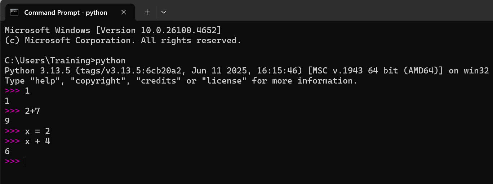
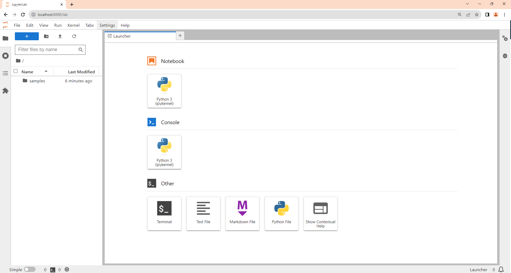

import os
os.getcwd()Python and Jupyter Notebook
(CSE331) Python for Data Science
1 Introduction to Python
- Python is a powerful general-purpose programming language widely used in data science and machine learning.
- Python was created in 1991 by Guido van Rossum at Centrum Wiskunde & Informatica (CWI) in the Netherlands.
- Python emphasizes code readability and simplicity with a clean, consistent syntax.
- Python is free and open source, with a massive ecosystem of libraries and an extensive global community.
- The language is stewarded by the Python Software Foundation (PSF) and maintained by a large open-source contributor base.
- PyPI (the Python Package Index) hosts community-contributed packages you can install to extend Python.
2 Why learn Python for Data Science
- Python is open source and freely available for Windows, macOS, and Linux.
- Rich data-science stack:
- NumPy for fast numerical computing
- pandas for data manipulation (similar to R’s data frames)
- Matplotlib and Seaborn for visualization (and Plotly for interactivity)
- scikit-learn for machine learning
- One of the most popular languages for modern machine learning and AI applications in both academia and industry.
3 Python and the “two-language problem”
- Historically, teams prototype in a high-level language (e.g., R or SAS) and then re-implement in a systems language (e.g., C++/Java) for production.
- Python increasingly covers both roles: interactive research/prototyping and production services.
- When you need extra performance, Python can call into optimized code via Numba, Cython, or C/C++ extensions-so you don’t have to switch languages.
4 Download & Install Python
Official Python downloads: https://www.python.org/downloads/
For data science, we recommend the Anaconda distribution, which includes most essential packages and tools:
- Download: https://www.anaconda.com/download
To install:
- Run the downloaded installer.
- Follow the on-screen instructions.
In this course, we’ll primarily use Anaconda to run Python locally.
After installing, verify Python with
python --version(orpython3 --versionon macOS/Linux;py -3 --versionon Windows). Many systems usepython3by default, while Windows commonly usespy -3.
5 Python Interface (Python REPL)
- If you type
python(orpython3) in your terminal/command prompt, you’ll get an interactive prompt (>>>) that can execute Python statements immediately.
This interactive interpreter is often called the Python REPL (also “Python console/shell”).

- REPL stands for Read–Eval–Print Loop:
- Read the code you type
- Evaluate it when you press Enter
- Print the result
- Loop back to step 1
6 Scripts vs. Notebooks
- A Python script is a plain-text file (typically
.py) containing Python code.
Popular editors/IDEs for scripts include VS Code, PyCharm, Spyder, and Thonny. - A Jupyter notebook (
.ipynb) is an interactive document that mixes code, text, math, and outputs.
JupyterLab is the modern interface for creating and working with notebooks (and other files) in your browser.
7 Launch JupyterLab
- From Anaconda Navigator: click JupyterLab.
- From a terminal/command prompt:
jupyter lab(recommended)jupyter notebook(classic interface)
- This opens JupyterLab in your default web browser. To stop it, return to the terminal where it’s running and press
Ctrl+C.
In this course, we will use JupyterLab for an enhanced notebook experience.
8 Working with JupyterLab

Within the JupyterLab window, you can launch a:
- Notebook
- Console
- Terminal
- Text Editor, and more
9 Creating and Opening Notebooks
- To create a notebook, click the Notebook icon in the JupyterLab Launcher.
JupyterLab creates a new notebook (e.g.,Untitled.ipynb) using the IPython kernel (Python). - To open an existing notebook, locate it in the Files pane, then double-click (or right-click → Open).

10 Notebook Building Blocks
- A Jupyter notebook consists of cells. The two main types are:
- Code cells — for Python code
- Markdown cells — for narrative text and math
- Use Shift+Enter to run the current cell (then move to the next).
- In Markdown cells you can write:
- Regular text (headings, lists, etc.)
- LaTeX math, e.g.
$\\alpha+\\beta$for inline or$$...$$for display equations - Basic HTML if needed
11 Working Directory in Jupyter
- JupyterLab typically starts in the directory you launched it from.
New notebooks inherit the folder in which they are created/saved. - Check the current working directory in Python:
- Change the working directory in Python:
import os
os.chdir("path/to/directory") # e.g., "C:/Users/you/projects" on Windows or "/Users/you/projects" on macOS/Linux- IPython/Jupyter also provides magics (available in notebooks and IPython consoles):
%pwd # show current working directory
%cd /path/to/folder # change directory
%ls # list files in current directory(Magics are not standard Python; they only work in IPython/Jupyter.)
12 Listing Files in the Current Directory
- Using Python:
import os
os.listdir() # returns a list of file/folder names- Using Jupyter magics (IPython):
%ls13 Python Packages for Data Science
- Core packages you’ll use frequently:
- NumPy — numerical arrays, linear algebra, fast vectorized operations
- pandas — data frames, grouping, reshaping, joins, time series
- Matplotlib / Seaborn — static visualization
- Plotly — interactive visualization
- scikit-learn — machine learning models and utilities
- Installing packages inside a notebook (preferred magic):
%pip install package-name- Installing packages in a terminal:
# pip
pip install package-name
# or explicitly pip3 if needed
pip3 install package-name
# conda (if using Anaconda/Miniconda):
conda install package-name- Using packages after installation (each new session needs imports):
import pandas as pd
import numpy as np
import matplotlib.pyplot as plt14 A quick, fun test: emoji
Try installing the emoji package and using it:
%pip install emojiimport emoji
emoji.emojize("Python is :thumbs_up:", language="alias")
# Alternative common name:
emoji.emojize("Python is :thumbsup:")